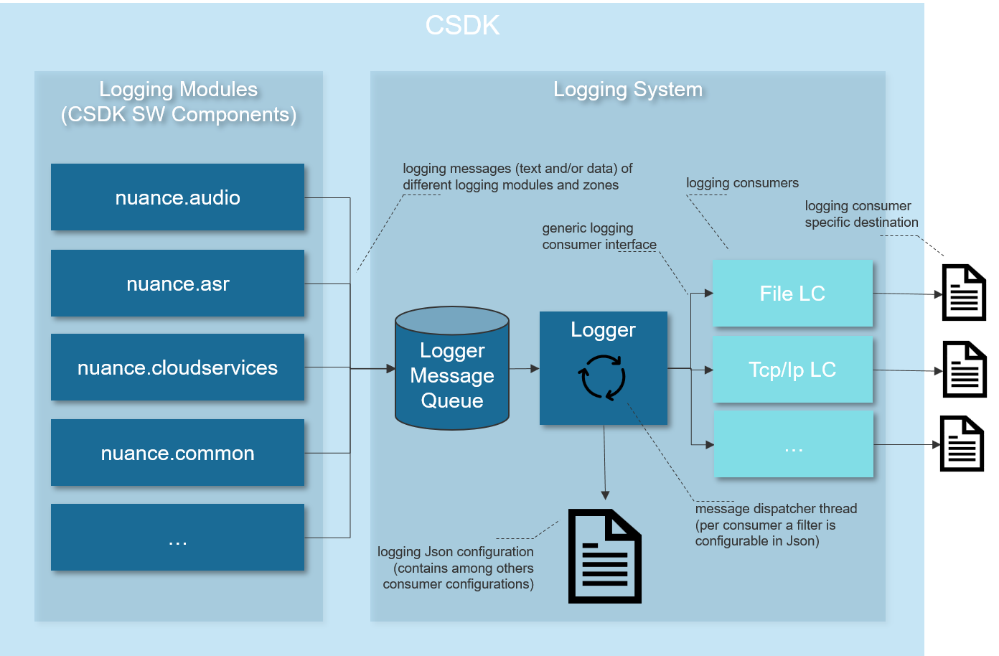

Logging System Overview
The internal logging system of the CSDK consists of logging modules, a logger message queue, a logger message dispatcher thread and so called logging consumers.
{kind=link}
The logging messages (text and/or data) created by a SW component are enqueued in the logging message queue. In addition to the message itself, meta information like the logging module, the logging zone, the file name and the file line number of the message origin are stored. Thereby the logging module indicates the “source” SW component of the message. Possible logging modules are for instance nuance.audio, nuance.common or such the like. The logging zone indicates the “type” of a logging message with possible values like FATAL, ERROR, WARNING and others. Both parameters (log modules and log zones) can be used to define a logging message filter to determine which kind of messages shall be passed to a specific consumer (e.g. only messages of logging zone ERROR and FATAL and only from logging module nuance.audio).
The primary function of the logging message queue is to decouple the logging call from the actual dispatching and processing of the message to avoid negative impacts of logging on the runtime behavior. The logging message dispatcher thread takes over the part of dispatching the messages of the logging queue to the dedicated logging consumers. Which message is dispatched to which consumer is configurable in the logger Json configuration for each consumer individually.
Finally the internal logging system uses a logging consumer (abbr. “LC”) approach to realize logging outputs of any kind whatsoever (e.g. to a file, to a TCP/IP socket, ..). Each instance of such a logging consumer can be configured in the Json configuration of the common component. This allows for instance to set a consumer specific configuration (e.g. a file path for a file writer consumer) or filter parameters that allow to determine which kind of messages shall be passed to this consumer. This approach offers the possibility to define logging consumers and their specifically filtered logging output in a flexible manner.
The logging system provides the following “built-in” log consumers:
- file consumer
- console output (stdout/stderr) consumer
- DLT (Diagnostic Log and Trace, logging SW from Genivi alliance) consumer
- TCP/IP socket consumer
- TraceClient consumer
Initialize Logging
There are no dedicated interface calls needed to initialize the logging subsystem.
The logger is initialized automatically by the system manager when calling nuance_common_ISystemManager_create.
Therefore it is important to load the loggers configuration also to the configuration object which is used to create the system manager,
see System Manager.
General Logging
Overview
Logging is an important part in the development of a application. It can provide precise information about the execution steps of a program. In error conditions the analysis of the logger output is often without any alternative to understand the reason of the failure.
Module names
The components use different logging module names to identify the origin of log messages. Logging module names are organized hierarchically, a dot is used as separator between top-level modules and sub-level modules.
The following module names can be set:
| Module | Description |
|---|---|
| nuance.audio | Activates log messages for all audio modules |
| nuance.asr5 | Activates log messages for the ASR component |
| nuance.cloudservices | Activates log messages for the cloud services component |
| nuance.common | Activates log messages for the common component |
| nuance.pal | Activates log messages for all PAL modules |
| nuance.prompter | Activates log messages for the prompter component |
| “” | empty string value activates log messages for all components |
If a log output (also called “consumer”) is configured for a top-level module
like nuance.asr5, it will also receive the log messages of the sub-modules like
nuance.asr5.Recognizer, nuance.asr.AsrManager, …
Log zones
Log zones are used to select a certain type of logger output. Multiple log zones
can be combined in the logger configuration, e.g. a consumer can set
"zones":"LOG_ERROR|LOG_WARNING" to receive ERROR as well as WARNING messages.
The following log zones are defined:
| Zone | Description |
|---|---|
| LOG_FATAL | All events that are a show stopper for the running application |
| LOG_ERROR | All events that are error conditions but recoverable |
| LOG_WARNING | Information that is useful to check the correct functionality |
| LOG_PERFORMANCE_WARNING | Information that the system performance is worse than expected |
| LOG_CORE_INFO | Special core information, e.g. threads started/stopped, used files and versions. This log zone has a low message volume. |
| LOG_INFO | More information that is useful to check the correct functionality |
| LOG_EXTERNAL_FUNC | Trace entry and exit of external functions |
| LOG_EXTERNAL_PARAM | Trace parameters of external functions |
| LOG_INTERNAL_FUNC | Trace entry and exit of internal functions |
| LOG_INTERNAL_PARAM | Trace parameters of internal functions |
| LOG_ALL_TEXT | LOG_FATAL|LOG_ERROR|LOG_WARNING|LOG_PERFORMANCE_WARNING|LOG_CORE_INFO|LOG_INFO| LOG_EXTERNAL_FUNC|LOG_EXTERNAL_PARAM|LOG_INTERNAL_FUNC|LOG_INTERNAL_PARAM |
| LOG_DATA | Trace binary data of the configured modules |
| LOG_TIMING_ANALYSIS | Log timing of audio chunks for detailed offline analysis. |
Note that the binary data log zone LOG_DATA cannot be combined with other log zones.
JSON Configuration
The logger is configured with a JSON file (with "version":"Common 1.0").
For example, the following file configures a logger that will write error and warning log messages to standard output:
{
"version": "Common 1.0",
"logger": {
"consumers": [{
"name": "stdout Logger",
"output": "stdout",
"modules": "",
"not_modules": "",
"zones": "LOG_ERROR|LOG_WARNING"
}
]
}
}
For details on the JSON format of the logger configuration file see the section ILoggerConfig
in the JSON configuration documentation of the common component.
Logged text content
A log message in the output consists of the following fields:
TIMESTAMP - time (resolution in milliseconds) since logger has been started
ZONE - log zone of the message
THREAD - ID of the thread which generated the log message
MODULE - the logging source
MESSAGE - the text message (with optional file name and line of code where the text was logged)
Example:
TIMESTAMP ZONE THREAD MODULE MESSAGE
========= ==== ====== ====== =======
00:00.000 CORE_INFO: [25416] nuance.pal.THREAD name='timerThread' id=21676 runtimePrio=0 was created. [starrec_pal_thread.c:608] [181]
00:00.000 EXT_FUNC: [25416] nuance.common.IConfiguration create('..\..\data\asr\config', 0) [51]
00:00.016 EXT_FUNC: [25416] nuance.common.SystemManager create() -> [154]
00:00.016 CORE_INFO: [25416] nuance.pal.THREAD name='Logger' id=9540 runtimePrio=0 was created. [starrec_pal_thread.c:608] [181]
00:00.032 CORE_INFO: [25416] nuance.pal.THREAD name='AUDIO_MAIN' id=21108 runtimePrio=0 was created. [starrec_pal_thread.c:608] [181]
00:00.032 EXT_FUNC: [25416] nuance.common.SystemManager create() <- [154]
00:00.032 EXT_FUNC: [25416] nuance.audio.AudioManager create() -> [489]
Buffer overrun
To decouple the components which create log messages from the logging consumers,
the components push their log messages into a buffer (logger message queue). A dedicated logger
thread takes the messages out of this buffer and passes them to the consumers.
The size of the buffers can be configured with the JSON configuration parameters
text_buffer_entries and data_buffer_size_per_channel. If log messages
are created faster than they are processed by the consumers (e.g. due to slow
file system when writing a log file, or slow standard output connection), a
buffer overrun can happen.
If a data logging buffer is full when the function logData() is called then the following text message is logged:
00:03.0596 ERROR: [6088] nuance.common.Logger Log data buffer overrun! Module: nuance.prompter.PrompterAudioSource.prompter. Configured max. size: 1024
To reduce the amount of buffer overruns with data logging it is recommended to set the JSON configuration
parameter "data_buffer_size_per_channel" to a rather high value, e.g. "data_buffer_size_per_channel": 500000.
If the text logging buffer is full, the software checks if the last logged message contains already the info that the logging buffer is full. If not, the oldest logged message on the buffer is removed and the following text message is logged:
00:02.0898 ERROR: [8308] nuance.common.Logger Log text buffer overrun! Check 'text_buffer_entries' property in the configuration! Currently: 512
After logging that message, the text buffer is blocked from receiving additional logging messages, i.e. incoming messages are dropped as long as no space is available in the buffer.
Audio Logging
The logging of audio data is described in the Audio Logging chapter of the Audio User’s Guide.
Use Logging
This chapter describes how an application can connect to the SDK’s logging subsystem either to write own log messages to it, or to receive the log messages from it and handle them as desired. Additionally the configuration of built-in log consumers can be modified if desired.
Sending
An application can send messages and data to the logging subsystem as follows:
Once the logging subsystem is initialized (see Initialize logging), the application can obtain a handle via the method nuance_common_ILogging_getInstance.
Use this handle to send own messages to the logging subsystem via nuance_common_ILogging_logText or binary data via nuance_common_ILogging_logData.
For more details about the parameters, please have a look at the interface documentation of the mentioned methods.
Receiving
An application can receive messages and data from the logging subsystem as follows:
Once the logging subsystem is initialized (see Initialize logging), the application can obtain a handle via the method nuance_common_ILogging_getInstance.
Use this handle to add an own log consumer via nuance_common_ILogging_addConsumer.
Optionally this log consumer may already be configured via a JSON file. The connection is done by the consumerName.
On top of that the consumers configuration can be set or updated by calling nuance_common_ILogging_configureConsumer.
Here also the consumerName is used to address the desired log consumer.
Once the log consumer is no longer needed it has to be removed from the logging subsystem by calling nuance_common_ILogging_removeConsumer.
For more details about the parameters, please have a look at the interface documentation of the mentioned methods.
Note
In addition to the approach described above the SDK supports to plug in customer consumer implementations provided as a shared library. If this option is required from your project please contact Cerence for further information.
Modifying
An application can modify at runtime the configuration of any log consumer known at the logging subsystem.
For instance: Log consumers configured in the JSON logging to file are automatically known at the logging subsystem.
Once the logging subsystem is initialized (see Initialize logging) it can be accessed as follows.
Obtain a handle via the method nuance_common_ILogging_getInstance.
The configuration of any present log consumer can be modified by calling nuance_common_ILogging_configureConsumer.
The consumerName is used to address the desired log consumer.
For more details about the parameters, please have a look at the interface documentation of the mentioned methods.